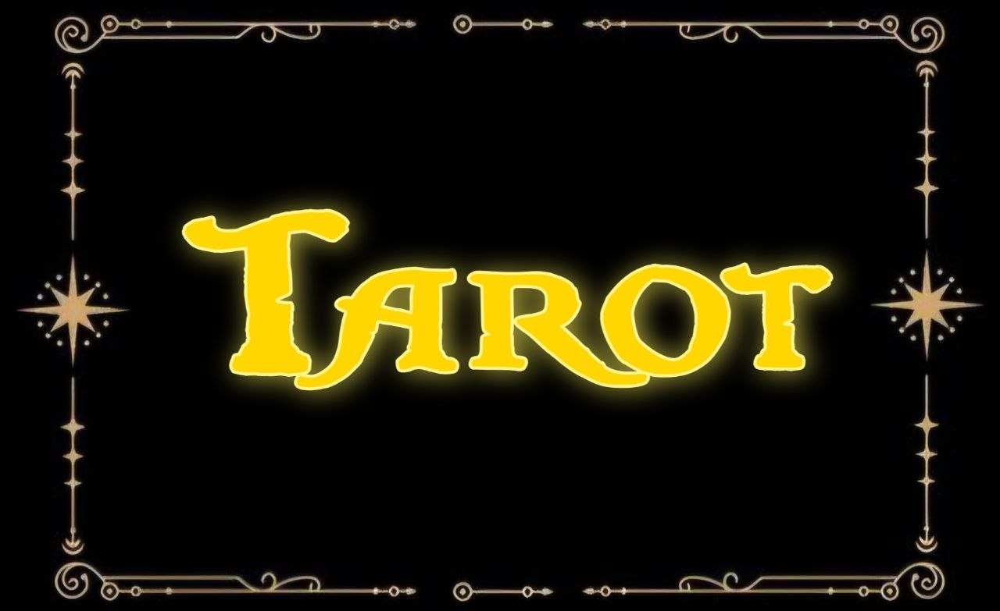
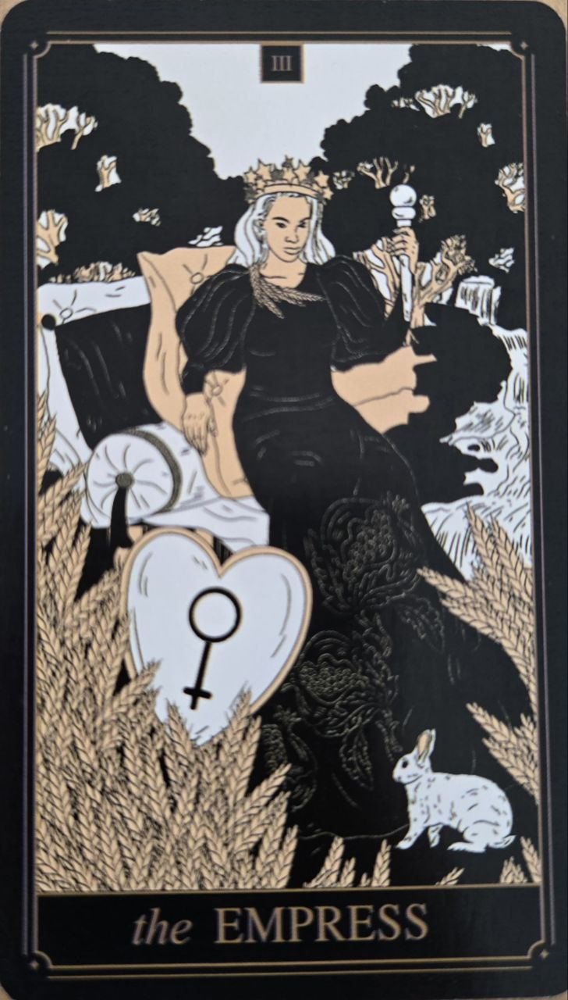

Cisárovná predstavuje plodnosť, tvorivosť a prirodzený rast. Je to karta, ktorá spája jemnosť s pevnou životnou silou — nie cez kontrolu, ale cez prijatie a rozvíjanie.
Často sa spája s obdobím, keď niečo v živote „rastie“: projekt, vzťah alebo vnútorný stav. Jej energia je mäkká, ale stabilná.
Cisárovná symbolizuje starostlivosť, hojnosť a tvorivú energiu. Hovorí o schopnosti vytvárať a udržiavať život — či už emocionálne, kreatívne alebo materiálne.
Táto karta často naznačuje obdobie, keď veci prirodzene dozrievajú bez tlaku a nútenia.
Na karte býva postava spojená s prírodou, často obklopená rastlinami, obilím alebo vodou.
Koruna alebo symboly Venuše odkazujú na ženský princíp — nie ako rolu, ale ako energiu prijímania a tvorenia.
Príroda okolo nej ukazuje prirodzený cyklus rastu a hojnosti.
Cisárovná je často vnímaná ako „materská“ energia tarotu, ale v širšom zmysle ide skôr o schopnosť niečo vyživovať, než o doslovné materstvo.